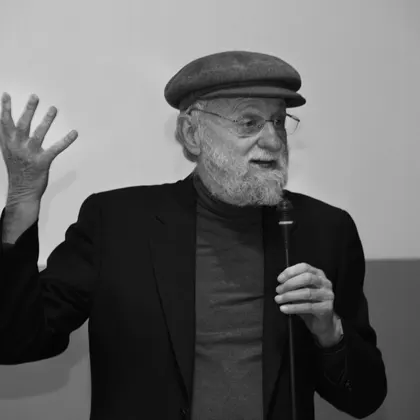

Académicamente
Relaciona tecnología, organización y experiencia de las personas para estudiar problemas completos.


METSI te ayuda a entender un problema antes de elegir una solución. Vas a investigar, comparar alternativas, probar cambios y comprobar si funcionan. Cada lectura y cada clase se apoyan en lo aprendido antes.
METSI · Metodología del Estudio de Sistemas de Información Diego Carralbal
La propuesta
En la vida profesional, los pedidos suelen llegar redactados como soluciones: “reemplacemos el sistema”, “hagamos una app”, “incorporemos IA”. Antes de aceptar esas soluciones, METSI propone entender qué pasa, a quién afecta y qué conviene cambiar.
Estudiamos cómo trabajan juntas las personas, las reglas, la información y la tecnología. Buscamos pruebas para explicar el problema y elegir un cambio. Después revisamos sus resultados: si no funciona o produce daño, hay que corregirlo o detenerlo.
Construir bien importa. Saber qué conviene construir, para quién y cómo comprobar el resultado, también.
Relaciona tecnología, organización y experiencia de las personas para estudiar problemas completos.
Prepara para decidir sin tener todas las respuestas, explicar las razones y hacerse cargo de los resultados.
La lectura prepara la clase. En el encuentro se discute, se resuelven casos y se revisan decisiones.
Combina explicaciones claras, ejemplos y profundidad conceptual. Distingue lo esencial de la ampliación.
Una metodología profesional
organiza el juicio
sin sustituirlo.
No se trata de seguir pasos de memoria. Se trata de explicar qué hiciste, por qué lo hiciste y qué información te haría cambiar de decisión.
El hilo conductor
Empezás con un pedido y aprendés a investigarlo. Después comparás soluciones, probás una y revisás qué pasó. El recorrido se repite cuando aparece información nueva.
El recorrido profesional
Pedido
Que alguien pida una app no demuestra que una app resuelva el problema.
Sistema
Miramos quién hace qué, con qué información y bajo qué reglas.
Evidencia
Separamos lo que vimos, lo que nos contaron y lo que todavía suponemos.
Decisión
Elegimos qué probar primero, qué cuidar y cuándo revisar o detener el cambio.
Operación
Comprobamos si el servicio funciona para las personas, también cuando algo falla.
Revisión
Registramos qué cambió, qué aprendimos y qué haríamos distinto.
Intervención defendible
Mapa de aprendizaje · N00–N36 Seguí el recorrido lectura por lectura.La arquitectura
Las 36 lecturas se organizan en ocho bloques. La guía N00 explica cómo recorrerlos. Cada bloque prepara el siguiente: comprender, investigar, modelar, decidir, entregar, operar, gobernar e integrar.
Atlas de prácticas y marcos
Elegí un bloque A–H y después un concepto. Vas a encontrar una explicación breve y secciones de las lecturas para empezar. Algunas referencias son conexiones con el tema, no cursos completos sobre ese marco.
N01—N04 · estación 01
01 Una práctica puede servir en varios bloques. El atlas propone puntos de entrada, no una lista exhaustiva de menciones. Cada enlace indica la sección y la página del PDF; si tu visor no salta a ella, usá ese número.
De entender qué pasa a comprobar si el cambio sirve y aprender de sus resultados.
N00 prepara el viaje. Las 36 lecturas lo desarrollan en ocho estaciones. Cada tramo deja algo que se puede usar en el siguiente.Cómo vamos a aprender y cuál es el hotel que usaremos como ejemplo. Es la guía, no una lectura más.
Lo aprendido cambia la próxima pregunta, no sólo la respuesta anterior.
El caso longitudinal
Hotel Horizonte
El hotel no es un ejercicio con una solución escondida. Es una organización ficticia y verosímil que acumula episodios, voces, documentos y consecuencias durante toda la materia.
Por ejemplo: si sólo mirás la aplicación, podés dejar afuera el trabajo de Recepción. Si cada área entiende algo distinto por «habitación lista», necesitás aclararlo antes de automatizar. Y si prometés reducir la espera, después tenés que medir si realmente bajó. Las decisiones no desaparecen al terminar una lectura.
La experiencia pedagógica
Antes de la clase, leés y anotás qué entendiste y qué te genera dudas. En clase, comparás ideas y resolvés casos con otros. Después, revisás tu respuesta y explicás qué cambió.
Leer, marcar una tensión, formular una hipótesis y nombrar la evidencia que podría debilitarla.
Posición inicialComparar interpretaciones, reconstruir episodios, construir artefactos y decidir frente a evidencia incompleta.
Trabajo compartidoRevisar lo producido, registrar el supuesto que cambió y conservar una decisión todavía discutible.
Aprendizaje trazableLa actividad visible no alcanza. METSI diseña para que aparezcan producción propia, contraste y revisión.
El dispositivo editorial
Cada lectura parte de una pregunta y una situación concreta. Explica las ideas con ejemplos, distingue lo esencial de la ampliación y propone aplicaciones. La ruta priorizada te ayuda a organizar el tiempo sin perder el hilo.
Abre un problema sin presuponer la solución.
Permite sentir la tensión antes de nombrarla técnicamente.
Explica la idea central, sus razones y sus límites.
Combina explicación conceptual, ejemplos simples, contraejemplos y aplicaciones paso a paso.
Obliga a aplicar lo aprendido en una situación ambigua.
Te ayuda a llegar a clase con una respuesta propia y preguntas concretas.
Serif para construir jerarquía y ritmo de lectura.
Volt para orientar, nunca para decorar.
Fotografía original en blanco y negro, situada y con función conceptual.
Infografía sólo cuando una relación se entiende mejor visualmente.
Accesibilidad desde el origen: contraste, estructura y alternativas textuales.
Cuatro maneras de mirar
01
El diseño declara propósito, progresión, carga, bibliografía, criterios de calidad y límites. La cátedra puede auditar la experiencia sin depender de una clase observada de manera aislada.
02
METSI conecta la formación técnica con análisis organizacional, investigación, gestión, producto, operación, accesibilidad e IA. No duplica una materia de construcción: trabaja el juicio que decide qué construir y por qué.
03
Las lecturas liberan tiempo de exposición y ofrecen lenguaje, casos y evidencia compartida. El docente puede detectar dudas, explicar de otra manera, proponer ejemplos y acompañar la práctica.
04
Cada lectura anticipa su pregunta, ofrece una ruta priorizada y distingue lo esencial de la ampliación. La meta no es repetir el documento: es llegar con una idea propia que pueda mejorar al trabajar con otras personas.
Programa académico 2026
METSI prepara para comprender cómo funciona una organización, investigar sus problemas y justificar cambios con evidencia.
La propuesta reúne 36 lecturas, la guía N00, ocho unidades y el caso Hotel Horizonte. La carga formal es de 108 horas; el programa detalla las condiciones de implementación y evaluación.
Propuesta para revisión de cátedra y evaluación institucional. Incluye contenidos, enseñanza, evaluación y bibliografía. En el sitio usamos METSI como nombre de la propuesta; arriba se conserva la denominación formal de la asignatura.
Referentes y bibliografía
METSI combina pensamiento argentino y latinoamericano con investigación global, estándares y evidencia profesional. Las fuentes no aparecen como autoridades aisladas: ayudan a formular mejores preguntas, contrastar explicaciones y justificar decisiones.
Esta es la selección general del programa, no toda la bibliografía de las 36 lecturas. Más abajo podés consultar las obras y localizar la bibliografía específica de cada N.
Argentina y América Latina
Sistemas complejos e investigación interdisciplinaria.
Identidad, tensiones y cambio organizacional.
Interfaces como redes de relaciones y prácticas.
Lenguaje, compromisos y diseño de sistemas.
Selección tecnológica, dependencia y proyecto.
Poder, conocimiento, diálogo y acción transformadora.
Conversación global
Fronteras, indagación y comportamiento sistémico.
Práctica reflexiva y acción situada.

Diseño humano y sistemas sociotécnicos.
Stakeholders, voz y aprendizaje colectivo.
Seguridad como propiedad del sistema completo.
Marcos y evidencia usados con contexto y revisión.
Los retratos de Wikimedia Commons se recortaron y convirtieron a blanco y negro para esta página. Cada versión conserva la licencia enlazada junto a su autor:
Los siguientes retratos provienen de las fuentes indicadas. Su autorización para esta página está pendiente de gestión por el autor del curso; no se presentan como imágenes de libre uso:
Selección general compartida con el programa. Los enlaces identifican la obra y el año citados; cada lectura puede agregar otras ediciones y fuentes.
García, R. (2006). Sistemas complejos: conceptos, método y fundamentación epistemológica de la investigación interdisciplinaria. Gedisa. Aporta una forma rigurosa de construir sistemas de estudio mediante preguntas, relaciones y evidencia.
En las lecturas: N01 · N02 · N03 · N04 · N08 · N09 · N10 · N11 · N12 · N13 · N14 · N15 · N16 · N17 · N18 · N19 · N20 · N21 · N22 · N23 · N24 · N26 · N27 · N28 · N29 · N30 · N34 · N35 · N36
Etkin, J. y Schvarstein, L. (1989). Identidad de las organizaciones: invariancia y cambio. Paidós. Permite estudiar tensiones entre identidad, estructura, poder y transformación organizacional.
En las lecturas: N01 · N02 · N03 · N04 · N05 · N09 · N11 · N12 · N13 · N14 · N15 · N16 · N17 · N18 · N19 · N20 · N21 · N22 · N23 · N24 · N26 · N27 · N28 · N29 · N30 · N34 · N35 · N36
Scolari, C. A. (2018). Las leyes de la interfaz: diseño, ecología, evolución, tecnología. Gedisa. Amplía la interfaz desde la pantalla hacia una red de relaciones, prácticas y mediaciones.
En las lecturas: N06 · N07 · N08 · N09 · N10 · N11 · N12 · N13 · N14 · N15 · N16 · N21 · N22 · N23 · N24 · N26 · N27 · N28 · N29 · N30 · N31 · N32 · N33 · N34
Winograd, T. y Flores, F. (1986). Understanding Computers and Cognition: A New Foundation for Design. Ablex. Introduce compromisos, lenguaje y acción como dimensiones centrales del diseño de sistemas.
Varsavsky, O. (1974). Estilos tecnológicos: propuestas para la selección de tecnologías bajo racionalidad socialista. Periferia. Vuelve discutibles la neutralidad tecnológica, la dependencia y los criterios de selección.
Ricaurte, P. (2019). “Data Epistemologies, The Coloniality of Power, and Resistance”. Television & New Media, 20(4), 350–365. https://doi.org/10.1177/1527476419831640
En las lecturas: N05 · N06 · N07 · N08 · N09 · N10 · N31 · N32 · N33
Freire, P. (2005). Pedagogy of the Oppressed, 30th Anniversary Edition. Continuum. Vincula reflexión, diálogo y acción transformadora sin reducir el aprendizaje a recibir respuestas.
Churchman, C. W. (1968). The Systems Approach. Delacorte Press.
En las lecturas: N03
Checkland, P. y Poulter, J. (2007). Learning for Action. Wiley.
Meadows, D. H. (2008). Thinking in Systems: A Primer. Chelsea Green Publishing.
En las lecturas: N03
Schön, D. A. (1983). The Reflective Practitioner. Basic Books.
En las lecturas: N01 · N04 · N06 · N15 · N17 · N20 · N34 · N35 · N36
Suchman, L. A. (2007). Human-Machine Reconfigurations: Plans and Situated Actions. Cambridge University Press.
Norman, D. A. (2013). The Design of Everyday Things: Revised and Expanded Edition. Basic Books.
Freeman, R. E. (1984). Strategic Management: A Stakeholder Approach. Pitman.
En las lecturas: N05
Mumford, E. (2003). Redesigning Human Systems. IRM Press.
Leveson, N. G. (2012). Engineering a Safer World: Systems Thinking Applied to Safety. MIT Press.
En las lecturas: N03
Edmondson, A. C. (1999). “Psychological Safety and Learning Behavior in Work Teams”. Administrative Science Quarterly, 44(2), 350–383. https://doi.org/10.2307/2666999
En las lecturas: N16 · N17 · N25 · N28 · N29 · N30 · N34 · N35 · N36
Project Management Institute (2025). A Guide to the Project Management Body of Knowledge, PMBOK Guide, Eighth Edition, and The Standard for Project Management. PMI. https://www.pmi.org/standards/pmbok
Schwaber, K. y Sutherland, J. (2020). The Scrum Guide. https://scrumguides.org/scrum-guide.html
Object Management Group (2017). Unified Modeling Language, Version 2.5.1. https://www.omg.org/spec/UML/2.5.1
Object Management Group (2014). Business Process Model and Notation, Version 2.0.2. https://www.omg.org/spec/BPMN/2.0.2
W3C (2024). Web Content Accessibility Guidelines (WCAG) 2.2. https://www.w3.org/TR/WCAG22/
En las lecturas: N09
Tabassi, E. (2023). Artificial Intelligence Risk Management Framework (AI RMF 1.0). NIST AI 100-1. https://doi.org/10.6028/NIST.AI.100-1
En las lecturas: N01 · N02 · N04 · N06 · N11 · N12 · N17 · N19 · N20 · N22 · N31 · N32 · N33 · N34 · N36
DeBellis, D. et al. (2024). DORA Accelerate State of DevOps 2024 Report. https://research.google/pubs/dora-accelerate-state-of-devops-2024-report/
Cada enlace abre Referencias base en el PDF publicado. No incluye la guía N00.
Obras completas, ediciones y criterios de actualización en el programa académico.
La colección
La guía N00 y las treinta y seis lecturas N01–N36 se pueden descargar. En conjunto presentan el contrato de trabajo de METSI y desarrollan los ocho bloques curriculares, de A a H.
N00 orienta la experiencia. N01 a N36 forman la colección de lecturas, publicada y auditada.

N00 · GUÍA DE LA EXPERIENCIA
Qué materia empieza, cómo está organizada, qué función cumple cada lectura y cómo se conectan teoría, práctica y evaluación.
Descargar N00 ↓Ver el recorrido visual N00–N36 ↗
N01 · 36 páginas

N02 · 36 páginas

N03 · 34 páginas

N04 · 35 páginas

N05 · 32 páginas

N06 · 34 páginas

N07 · 35 páginas

N08 · 33 páginas

N09 · 33 páginas

N10 · 38 páginas

N11 · 48 páginas

N12 · 39 páginas

N13 · 38 páginas

N14 · 51 páginas

N15 · 49 páginas

N16 · 38 páginas

N17 · 44 páginas

N18 · 40 páginas

N19 · 38 páginas

N20 · 39 páginas

N21 · 40 páginas

N22 · 39 páginas

N23 · 34 páginas

N24 · 37 páginas

N25 · 33 páginas

N26 · 37 páginas

N27 · 39 páginas

N28 · 39 páginas

N29 · 41 páginas

N30 · 40 páginas

N31 · 40 páginas

N32 · 44 páginas

N33 · 42 páginas

N34 · 40 páginas

N35 · 40 páginas

N36 · 43 páginas
El estándar
La identidad visual no está separada de la propuesta académica. Orientación, legibilidad, procedencia, accesibilidad y control de pérdidas forman parte del mismo sistema de calidad.
METODOLOGÍA DE LOS SISTEMAS DE INFORMACIÓN